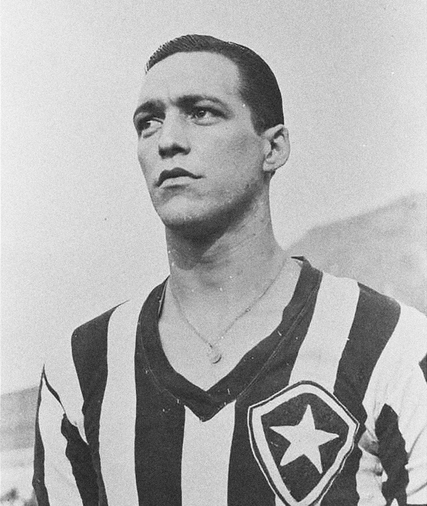

História do Botafogo

A história do clube começa com a palavra "Botafogo", que era a alcunha do galeão da marinha portuguesa, chamada de São João Batista. O galeão recebeu esse nome devido ao seu imenso poder de ataque, com 366 bocas de fogo e canhões de bronze. Lançado ao mar no século XVI, o navio era um dos mais poderosos de sua época, se não o maior.
Ficou famoso por seu papel na conquista de Tunes, onde ajudou a romper as defesas do porto, quando Carlos V solicitou apoio naval aos portugueses e requisitou especificamente o “Botafogo”.
Um dos membros da tripulação, o nobre João Pereira de Sousa, artilheiro do navio, acabou herdando o apelido de Botafogo. Ele depois se estabeleceria no Brasil e viria a lutar contra franceses e índios Tupiniquins, recebendo como recompensa da coroa portuguesa terras na Baía de Guanabara, que, por isso, passaram a ser conhecidas como terras do Botafogo.
Essas terras, mais tarde, herdariam o nome "Botafogo", em homenagem ao apelido do nobre. Assim, surgiu o bairro de Botafogo, que mais tarde daria nome ao Clube de Regatas Botafogo e ao Botafogo Futebol Clube.
Clube de Regatas Botafogo
Fundado em 1° de julho de 1894, foi o primeiro clube carioca campeão brasileiro de remo. Seu foco eram os esportes aquáticos. Sua sede ficava na praia de Botafogo, e o clube se destacou com o barco Diva, que se tornou uma lenda nas águas da Baía de Guanabara ao vencer todas as 22 regatas que disputou, sagrando o clube como campeão carioca de 1899.
Botafogo Football Club
No ano de 1904, surgia no bairro de Botafogo um novo clube de futebol, o Electro Club. A associação nasceu a partir da ideia de Flávio Ramos e Emmanuel Sodré, que estudavam juntos no colégio Alfredo Gomes. Na tarde do dia 12 de agosto, Flávio, Emmanuel e outros colegas com idade entre 14 e 15 anos fundaram o Electro Club, no chalé de um velho casarão em ruínas da rua Conselheiro Gonzaga, gentilmente cedido aos garotos por Dona Chiquitota, avó materna de Flávio, que foi também quem sugeriu que mudassem o nome do clube para Botafogo.
Surgia então o Botafogo Football Club.
Em 1907 conquistou seu 1º Campeonato Carioca. Em 1909 aplicou a maior goleada da história do futebol brasileiro, um 24 a 0 contra o São Bento. O Botafogo foi tetracampeão carioca em 1910, 1912, 1913 e 1914.
Tetracampeonato
O tetracampeonato foi uma era dourada para o clube, consolidando o Botafogo como uma das potências do futebol brasileiro. Com a base formada, o clube se destacou no cenário nacional e se tornou conhecido por seu jogo bonito e pela habilidade de seus jogadores.
Destaques do Tetracampeonato
Os grandes ídolos do tetracampeonato foram: *Friedrich*, *Félix*, *Leônidas*, *Canela*, *Pereira*, entre outros, que eternizaram seus nomes na história do Botafogo e do futebol brasileiro.
DÉCADA DE 40
Na década de 40, o Botafogo alcançou novos patamares, consolidando-se como um dos maiores clubes do Brasil e do mundo. Com uma geração de jogadores excepcionais, como *Nilton Santos*, *Garrincha*, *Quarentinha* e *Jairzinho*, o clube conquistou diversos títulos nacionais e internacionais, incluindo o título de campeão carioca em 1943, 1944 e 1948.
Heleno de Freitas foi um dos grandes ídolos da equipe durante esse período e é considerado um dos maiores atacantes da história do futebol. Sua habilidade, técnica e faro de gol deixaram uma marca indelével na história do clube.
Além do sucesso em campo, a década de 40 foi marcada por uma grande torcida, que se apaixonou pelo estilo de jogo do Botafogo e pela